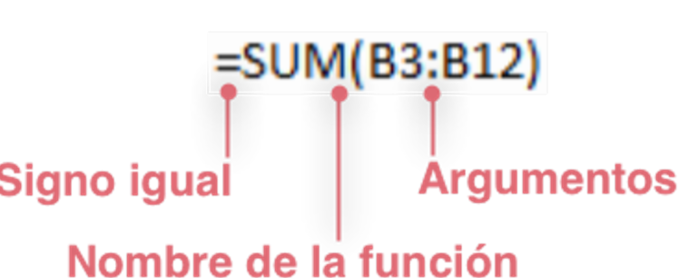
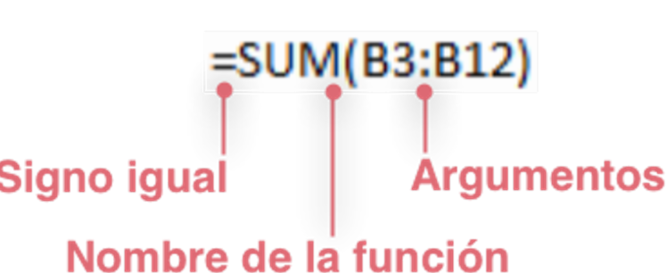

IMAGENES
DE ECXEL
Las funciones de hojas de cálculo se categorizan según su función. Haga clic en una categoría para explorar sus funciones. O bien, presione Ctrl+F para buscar una función escribiendo las primeras letras o una palabra descriptiva.
Para obtener información detallada sobre una función, haga clic en su nombre en la primera columna.
 
